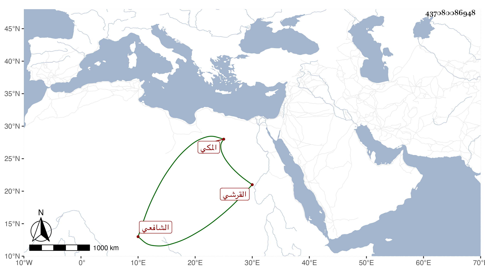

0902Sakhawi.DawLamic.ITO20230111-ara1.EIS1600.437080086948
Biography ID: 437080086948
180
محمد بن أحمد بن محمد بن محمد بن محمد بن حسين بن علي بن أحمد بن عطية بن ظهيرة أمين الدين أبو اليمن بن المحب بن الجلال أبي السعادات بن الكمال أبي البركات بن أبي السعود القرشي المكي الشافعي الماضي أبوه ويعرف كسلفه بابن ظهيرة . ولد في رجب سنة تسع وخمسين وثمانمائة في حياة جده وبخط ابن فهد في شعبان من التي بعدها ، وأمه زينب ابنة النجم محمد بن أبي بكر المرجاني . نشأ فحفظ القرآن والمنهاج وعرضه على البرهاني وحضر عند أبيه وكذا عندي دروسا في شرح الألفية وسمع على أشياء وهو جامد لم يزل متعللا حتى مات في مستهل ذي الحجة سنة أربع وتسعين واستقر في تصوفه بمدرسة السلطان حسن الطلخاوي وعز ذلك على عمه وابن عمه .
